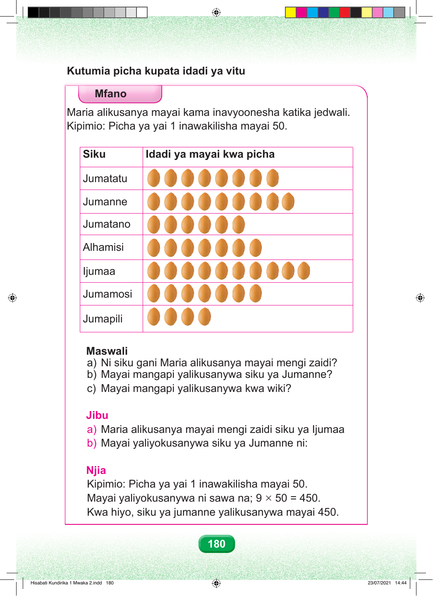

Kutumia picha kupata idadi ya vitu Mfano Maria alikusanya mayai kama inavyoonesha katika jedwali. Kipimio: Picha ya yai 1 inawakilisha mayai 50. Siku Idadi ya mayai kwa picha Jumatatu Jumanne Jumatano Alhamisi Ijumaa Jumamosi Jumapili Maswali a) Ni siku gani Maria alikusanya mayai mengi zaidi? b) Mayai mangapi yalikusanywa siku ya Jumanne? c) Mayai mangapi yalikusanywa kwa wiki? Jibu a) Maria alikusanya mayai mengi zaidi siku ya Ijumaa b) Mayai yaliyokusanywa siku ya Jumanne ni: Njia Kipimio: Picha ya yai 1 inawakilisha mayai 50. Mayai yaliyokusanywa ni sawa na; 9 × 50 = 450. Kwa hiyo, siku ya jumanne yalikusanywa mayai 450. 180 Hisabati Kundirika 1 Mwaka 2.indd 180 23/07/2021 14:44